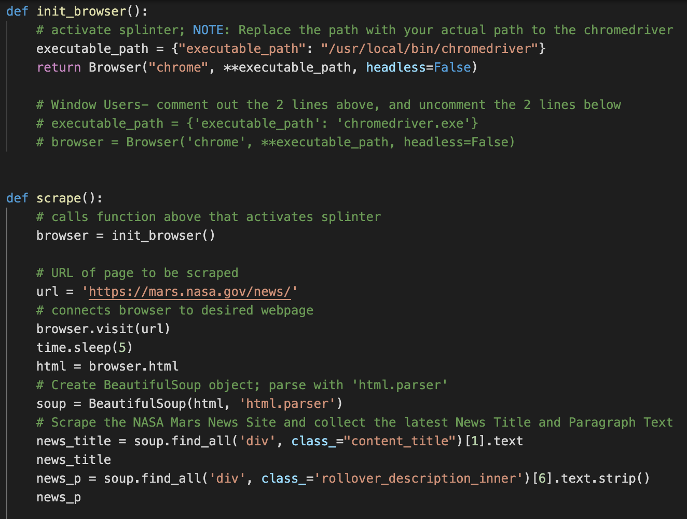
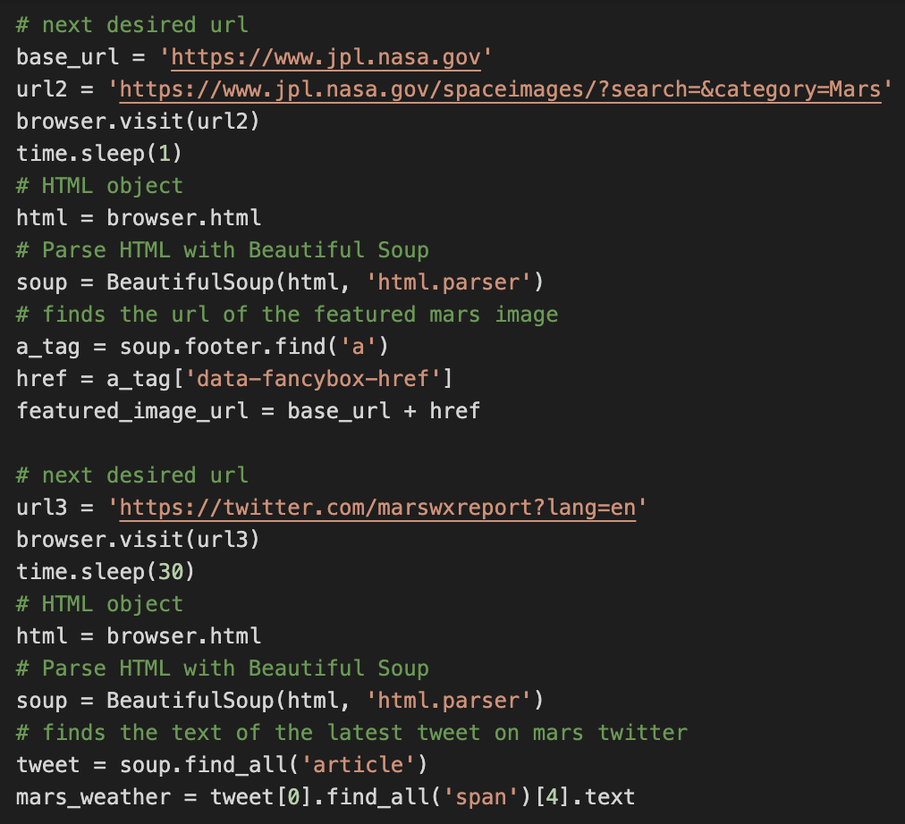
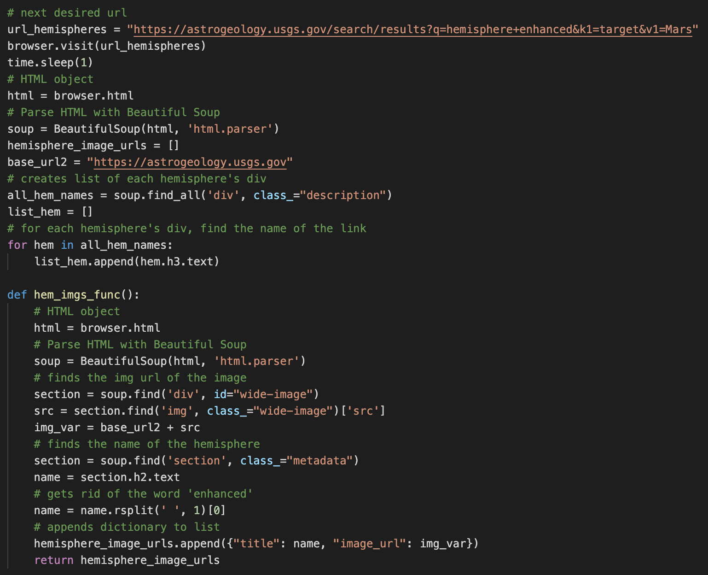
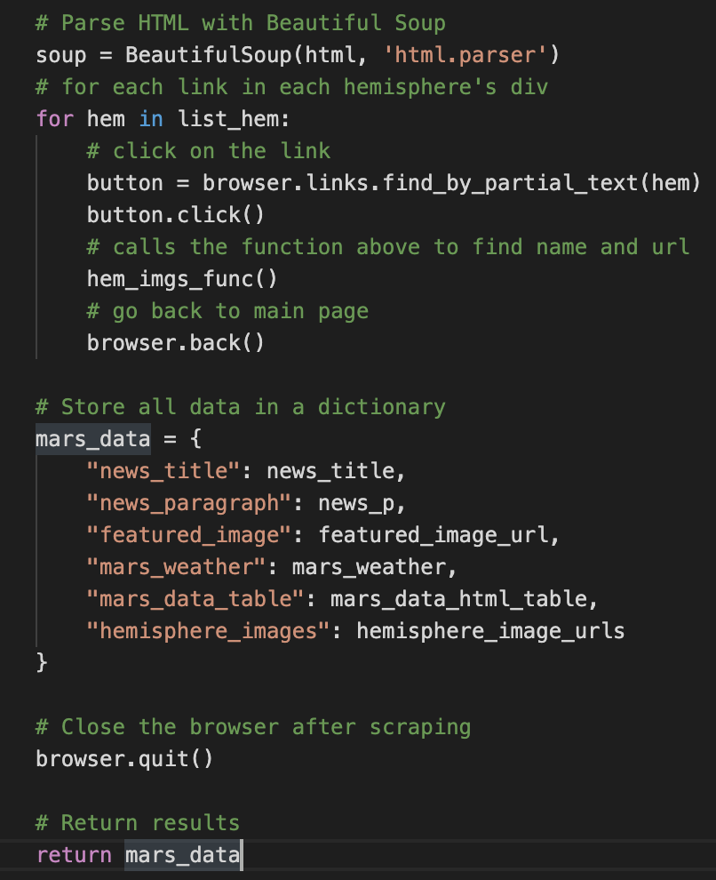
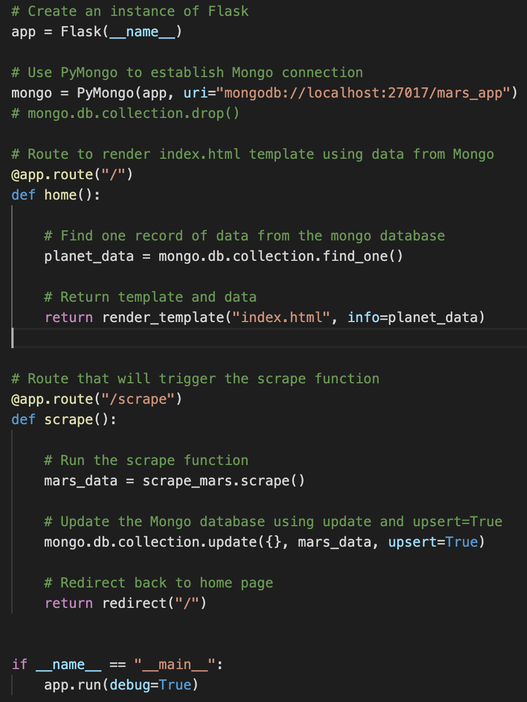
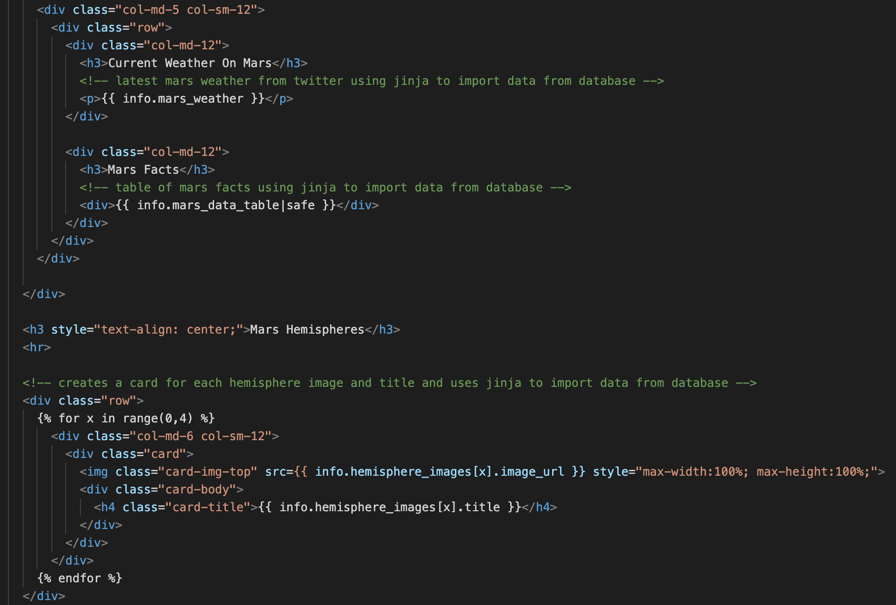

Mars Scraping
Github RepositoryThere are so many websites that contain interesting information about Mars, and new information is added to many of those websites every day. The purpose of this project is to create a web page that scrapes several websites using Beautiful Soup and Splinter to gather the latest data on Mars every time you click a button so users can stay up to do on latest Mars news/information. All of that data will be compiled and displayed neatly in an HTML page.
Languages
- Python
- HTML
- CSS
Data Extraction & Manipulation
- Spinlter
- Beautiful Soup
- Flask
- Pandas
Databases
- MongoDB
- PyMongo
Additional Technologies
- Jinja
- Bootstrap
- Jupyter Notebook
- Latest Mars News Title and Description: Nasa- Mars News
- Mars Featured Image: Nasa Jet Propulsion Laboratory Images
- Mars Weather: Mars Weather Twitter Account
- Mars Table of Facts: Space Facts
- Images of Mars Hemispheres: USGS Astrology Images
scrape_mars.py- uses Beautiful Soup, Splinter, and Python to scrape data from websites




app.py- uses Flask and Python to store scraped data to PyMongo and render data to webpage routes

index.html- uses HTML, Jinja, and Bootstrap to extract data from database and display it neatly on a webpage
